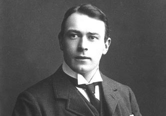
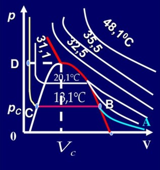
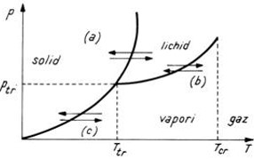

⤷
⤷
Thomas Andrews a fost un fizician și chimist de origine irlandeză, născut în data de 19.12.1813, în Belfast, UK și decedat în 26.11.1885 . Acesta a studiat la un colegiu din Dublin , unde a primit o distincție în științe, mai apoi titlul de doctor în medicină, în anul 1835 și o medalie pentru descoperirile lui în chimie, în anul 1844.
El a descoperit lichefierea gazelor în anul 1869 și a reușit să transforme dioxidul de carbon din stare gazoasă în stare lichidă, efectuând o serie de comprimări izoterme, măsurând dependența presiunii în funcție de volum.

Lichefierea gazelor
Transformarea de stare inversă vaporizării, adică trecerea din stare de vapori (gaz) în stare lichidă, numită lichefiere, se poate obține și prin creșterea presiunii gazului la temperatură constantă (comprimare izotermă). Temperaturile la care se lucrează în vederea lichefierii depind de natura gazului. Unele gaze se lichefiază numai
la temperaturi foarte coborâte (heliul, hidrogenul, oxigenul), altele la temperaturi obișnuite (CO2).
Acestea au fost câteva informații despre Thomas Andrews, fizician și chimist care a devenit un simbol al acestor științe.